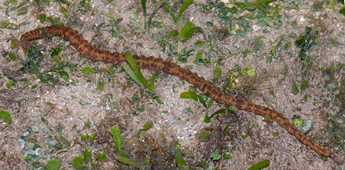
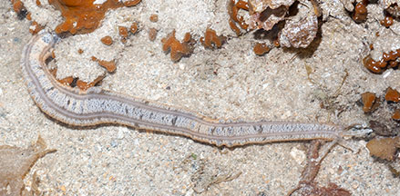
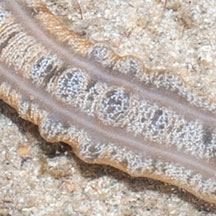
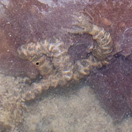

|
|
| sea cucumbers text index | photo index |
| Phylum Echinodermata > Class Holothuroidea > Order Apodida > Family Synaptidae |
| Big
synaptid sea cucumber awaiting identification* Family Synaptidae updated Apr 2020 Where seen? This long fat synaptid sea cucumber with bobbles is sometimes seen on many of our shores among seagrasses and reefs. It is possibly seasonally common with many individuals encountered over a wide area during a single trip, then none for some time. Features: 20-30cm to 50 cm long. Body cylindrical, thin skinned. Four rows of large almost spherical bumps ('bobbles') along the body. Bobbles usually mottled, often separated by four distinct plain lines. Feeding tentacles large flat and feathery. Each sea cucumber usually seen alone and not in groups. In various colours and patterns: dark maroon, pink, mottled brown, white. They may be different species. Sometimes mistaken for worms. Here's more on how to tell apart worm-like animals. |
 Cyrene Reef, Oct 07 |
 Large mottled bobbles separated by distinct plain lines. |
 Terumbu Bemban, Mar 13 |
 Four distinct lines separating 'bobble' area. |
 Cyrene Reef, Aug 12 |
 Feathery feeding tentacles. |
 Body covered with tiny hooked sclerites. |
 |
*Species are difficult to positively identify without close examination.
On this website, they are grouped by external features for convenience of display
| Big synaptid sea cucumbers on Singapore shores |
On wildsingapore
flickr
|
| Other sightings on Singapore shores |
 Sentosa Serapong, Jul 11 |
| Filmed on Cyrene
Reef, Oct 08. Synaptic Sea Cucumber @ Cyrene Reef from SgBeachBum on Vimeo. |
| Filmed on Cyrene
Reef, Jul 08 giant synaptid sea cucumber ! ....from outaspace from SgBeachBum on Vimeo. |
|